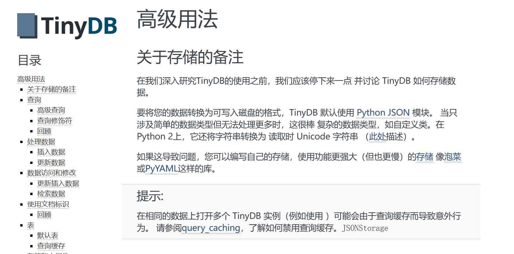
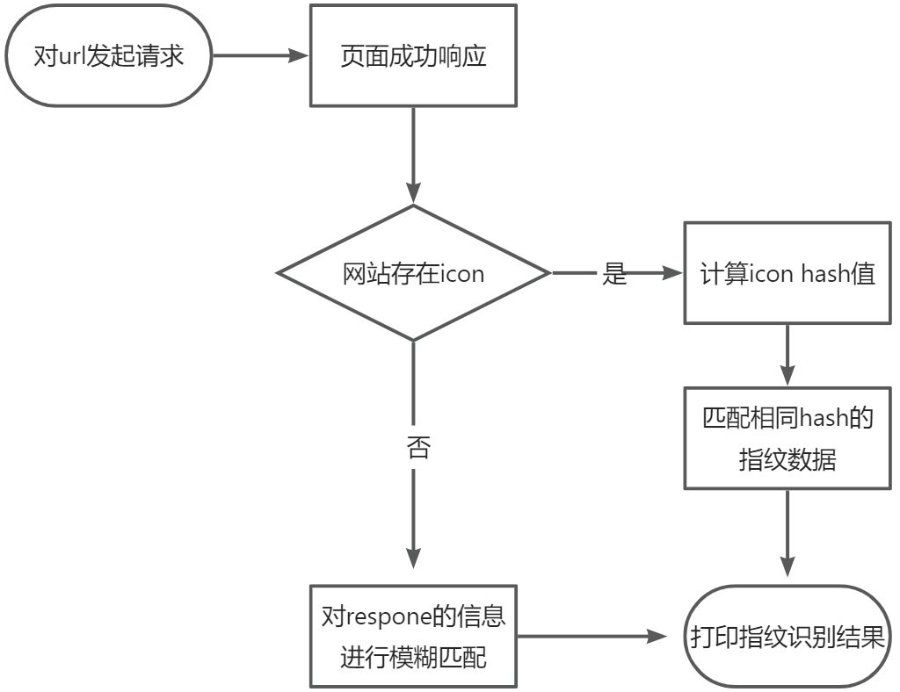
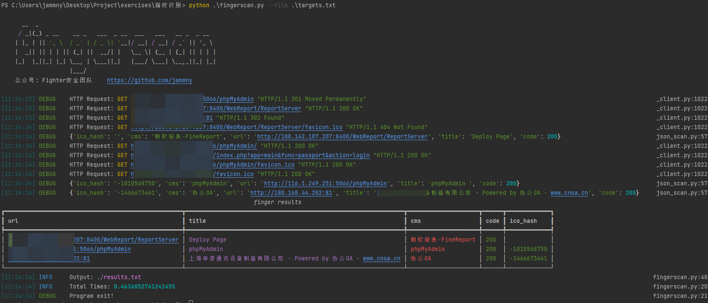

Py工具开发(2) | 指纹识别
原创声明：转载本文请标注出处和作者，望尊重作者劳动成果！感谢！
前言：打算以python语言为主，0 到 1 写一个信息收集工具开发系列。本文主要讲讲web指纹扫描器的开发思路。 上一篇文章：《Py工具开发(1) | 端口扫描》
前置知识
httpx 请求库
httpx是新一代的网络请求库，与requests库相比，它既能发送同步请求，又能发送异步请求，而requests只能发送同步请求。此外httpx还支持了HTTP/2，在requests是不支持的。httpx还能够直接向WSGI应用程序或者ASGI应用程序发送请求，到处都有严格的超时设置。下面是一个用于获取指定url响应包内容的demo：
#!/usr/bin/python
# -*- coding: UTF-8 -*-
from httpx import Client, Response
with Client(verify=False, follow_redirects=True) as client:
try:
response: Response = client.get("https://www.baidu.com")
response_data: dict = {
'status_code': response.status_code,
'resp_header': response.headers.values(),
'resp_body': response.text,
}
print(response_data)
except Exception as e:
print(e)
计算网站ICO哈希值
pymmh3是对Python的mmh3库的封装，它是一个快速和强大的非加密哈希函数集合，用法和mmh3差不多，而且它不依赖C++14.0环境，可以在windows直接安装：pip install pymmh3。下面是一个用于计算网站icon的哈希值的demo：
#!/usr/bin/python
# -*- coding: UTF-8 -*-
from codecs import lookup
import pymmh3
from httpx import Client, Response
with Client(verify=False, follow_redirects=True) as client:
try:
response: Response = client.get(f"https://docs.python.org/favicon.ico")
if response.status_code == 200:
favicon: bytes = lookup('base64').encode(response.content)[0]
print(pymmh3.hash(favicon))
except Exception as e:
print(e)
tinydb 数据库
TinyDB是一个基于json的轻量数据库。如果你的数据量较小且不擅长使用SQL语法，不妨使用它来代替实现数据的增删改查工作。开发工具所需要的指纹数据我已经存储进了tinydb，数据文件可以到文末进行获取。

通过查看tinydb官方文档，我们很容易就可以编写出一个demo，用来遍历读取数据库中所有的指纹数据：
#!/usr/bin/python
# -*- coding: UTF-8 -*-
from tinydb import TinyDB, Query
if __name__ == "__main__":
db: TinyDB = TinyDB("finger.json")
query: Query = Query()
for v in db.all():
# v: tinydb.table.Document
print(v)
print(v.doc_id)
基于数据指纹库匹配实现
程序设计思路
常见有两种方法实现指纹识别：第一种方法是通过提取响应页面的内容与已有数据指纹库进行匹配，第二种方法是通过构造poc指纹规则文件去主动识别。前者主要针对网站根目录下的主页信息进行提取，然后通过关键字对信息进行模糊匹配，代表工具有："EHole"，"Glass"；而后者比较灵活也更具有针对性，通常一个指纹对应一个文件，可以同时匹配多个路径下的页面信息，代表工具有："afrog"、"nuclei"。本文先介绍第一种实现方法，第二种方法在后续设计“POC漏洞扫描”的时候介绍。下面是程序运行流程图：

设计思路很简单，主要用到了常规两种方法去匹配指纹：
- faviconhash： 计算目标网站的favicon的哈希值，然后和库中的哈希值进行匹配。数据格式示例如下：
{'cms': 'SonicWALL', 'method': 'faviconhash', 'rules': ['631108382']}
- keyword：使用关键字的方法去正则匹配响应包中内容。数据格式示例如下：
{'cms': 'Jboss', 'method': 'keyword', 'location': 'body', 'condition': 'and', 'rules': ['Welcome to JBoss', 'jboss.css']}
介绍一下键值对应的数据和类型：
| 键 | 值 | 类型 |
|---|---|---|
| cms | 对应CMS的名称 | str |
| method | 匹配指纹所使用的方法，可选值为："keyword"、"faviconhash" | str |
| location | 需要匹配的位置，可选值为："header"、"body" | str |
| rules | 需要匹配的规则数据 | List[str, str,..] |
| condition | 条件成立逻辑关系，可选值为："and"、"or" | str |
功能实现代码
下面是包含注释的实现代码：
#!/usr/bin/python
# -*- coding: UTF-8 -*-
from concurrent.futures import ThreadPoolExecutor
from codecs import lookup
from pathlib import Path
from queue import Queue
from typing import ValuesView, Optional, List, Callable
import re
from httpx import Client, Response
from tinydb import TinyDB, Query
from tinydb.table import Document
import pymmh3
DIRNAME: Path = Path.cwd()
FINGER: Path = DIRNAME / "db/finger.json" # 指纹库路径
class FingerJScan(object):
def __init__(self):
self.db: TinyDB = TinyDB(f"{FINGER}") # 初始化TinyDB对象
self.query: Query = Query() # 初始化查询
self.keyword_db: List[Document] = self.db.search(self.query.method == 'keyword') # 获取使用keyword方法的数据
self.faviconhash_db: List[Document] = self.db.search(self.query.method == 'faviconhash') # 获取使用hash方法的数据
self.finger_results: list = list() # 存储所有目标URL识别的结果
def scan(self, queue_obj: Queue):
"""
执行指纹扫描任务
:param queue_obj: Queue 队列
:return:
"""
cms: set = set() # 存储匹配到的cms数据
cms_results: dict = dict() # 一条完整的cms识别结果数据
url: str = queue_obj.get() # 从队列中获取目标url
resp_data: Optional[dict] = self.send_request(url)
if not resp_data: # 如果目标访问失败就退出
return
body: str = resp_data['resp_body']
header: ValuesView[str] = resp_data['resp_header']
ico_hash: str = resp_data['ico_hash']
# 先判断有没有faviconhash。如果有就匹配库中的指纹
if ico_hash:
cms_results['ico_hash'] = ico_hash
icon_res: Optional[str] = self.resolver_icon(ico_hash)
if icon_res:
cms.add(icon_res)
else:
cms_results['ico_hash'] = ""
keyword_res: str = self.resolver_keyword(header, body)
if keyword_res:
cms.add(keyword_res)
cms_results['cms'] = " ".join(cms)
cms_results['url'] = url
re_title: list = re.findall(re.compile('<title>(.*?)</title>'), body) # 正则获取网页titile
cms_results['title'] = re_title[0] if re_title else ""
print(cms_results)
self.finger_results.append(cms_results)
def send_request(self, url: str) -> Optional[dict]:
"""
发送请求，获取响应内容
:param url: 目标url
:return:
"""
with Client(verify=False, follow_redirects=True, cookies={'rememberMe': '1'}) as client:
try:
response: Response = client.get(url)
ico_hash: Optional[str] = self.get_icon_hash(client, url) # 获取icon hash值
response_data: dict = {
'status_code': response.status_code,
'resp_header': response.headers.values(),
'resp_body': response.text,
'ico_hash': ico_hash,
}
return response_data
except Exception as e:
print(f"{url},{e}")
return
def get_icon_hash(self, client: Client, url: str) -> Optional[str]:
"""
通过直接拼接/favicon.ico的形式，去发现图标，并计算它的hash
:param client: httpx.Client()
:param url: 目标url
:return:
"""
try:
response: Response = client.get(f"{url}/favicon.ico")
if response.status_code == 200:
favicon: bytes = lookup('base64').encode(response.content)[0]
return str(pymmh3.hash(favicon))
else:
# 直接拼接有时候并准确，可以思考一下怎么智能识别icon
return
except Exception as e:
print(f"{url},{e}")
return
def resolver_icon(self, ico_hash: str) -> Optional[str]:
"""
解析内容，hash匹配指纹,
:param ico_hash: 目标iconhash
:return:
"""
for item in self.faviconhash_db:
hash_rules: list = item['rules']
if ico_hash == hash_rules[0]: # hash一般只有一个
return item['cms']
return
def resolver_keyword(self, header: ValuesView[str], body: str) ->str:
"""
解析内容，keyword匹配指纹
:param header: 响应头数据，collections.abc.ValuesView的泛型版本，可遍历数据
:param body: 响应内容
:return:
"""
def match() -> str:
for rule in keyword_rules:
# 如果逻辑条件是or，且比较位置在body
if condition == 'or' and location == 'body':
if rule in body:
return item['cms']
else:
continue
# 如果逻辑条件是or，且比较位置在header
elif condition == 'or' and location == 'header':
if rule in header:
return item['cms']
else:
continue
# 如果逻辑条件是and，且比较位置在body
elif condition == 'and' and location == 'body':
if rule not in body: # 但凡有一个不匹配就结束循环
return ""
else:
continue
# 如果逻辑条件是and，且比较位置在header
elif condition == 'and' and location == 'header':
if rule not in header:
return ""
else:
continue
return item['cms'] # 这里返回and成立的结果
for item in self.keyword_db:
keyword_rules: list = item['rules']
location: str = item['location']
condition: str = item['condition']
result: str = match()
if result != "":
return result
return ""
def run(self, targets: list):
"""
这里利用多线程批量执行任务
:param targets:
:return:
"""
threadpool_task(task=self.scan, queue_data=targets)
print(self.finger_results)
def threadpool_task(task: Callable, queue_data: list, thread_count: int = 100, task_args: tuple = ()):
"""
线程池模板
:param task: 需要执行的多线程任务
:param queue_data: 需要添加到队列的数据
:param thread_count: 并发数
:param task_args: 除了Queue之外的的参数
:return
"""
queue_obj: Queue = Queue(maxsize=0)
for i in queue_data:
queue_obj.put(i)
args: tuple = task_args + (queue_obj,)
with ThreadPoolExecutor(max_workers=thread_count) as pool:
for _ in range(queue_obj.qsize()):
pool.submit(lambda p: task(*p), args)
if __name__ == "__main__":
f = FingerJScan()
f.run(targets=['http://www.baidu.com', 'https://docs.python.org'])
优化功能和UI
UI还是继续使用rich，这个库在上一篇文章也有介绍。然后添加一些常用的功能：支持从txt中批量导入目标，支持保存结果到results.txt中。最终成品如下：

相关配置文件和程序源码已经打包好了，后台回复关键字获取即可。